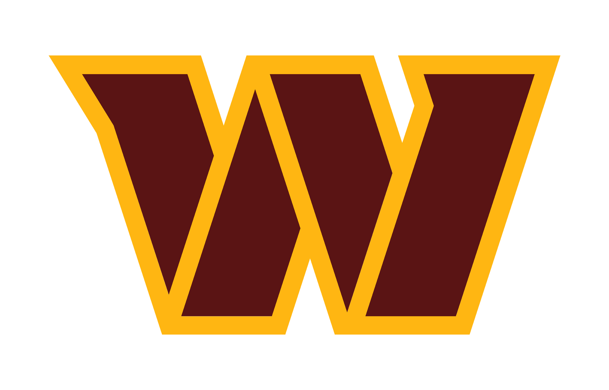
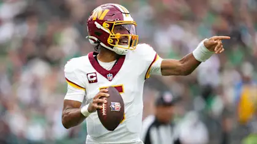
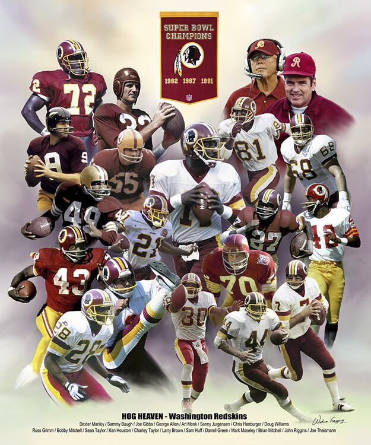

Hello and Welcome to the Washington Commanders Fan Page

If you're a member of the Commanders faithful , you've come to the right place
Here are some of my favorite Washington players
| PLAYER | WHY THEY'RE AWESOME |
|---|---|
| Jayden Daniels | Explosive QB with the best rookie season of OAT |
| Terry McLaurin | One of Washington's best receivers |
| Darrell Green | Washington LEGEND and one of the fastest players ever |
| Sean Taylor | Legendary safety known for huge hits and incredible plays |
Washington has one of the oldest franchises in the NFL.
The team has won multiple NFL championships and Super Bowls throughout its history.
Some of the greatest players in NFL history have played football in Washington.
